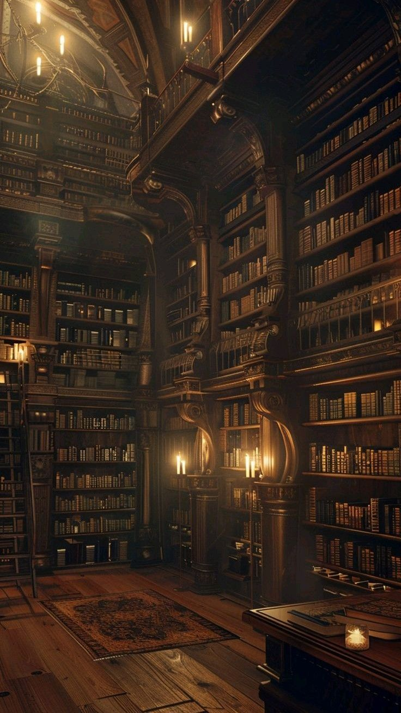
A Biblioteca Esquecida
Durante uma tarde chuvosa, você encontra uma parte da biblioteca que ninguém parece visitar. Entre livros antigos existe um arquivo com símbolos estranhos. Quando toca nele, uma sensação gelada percorre seu corpo. Algo lá dentro parece estar vivo.
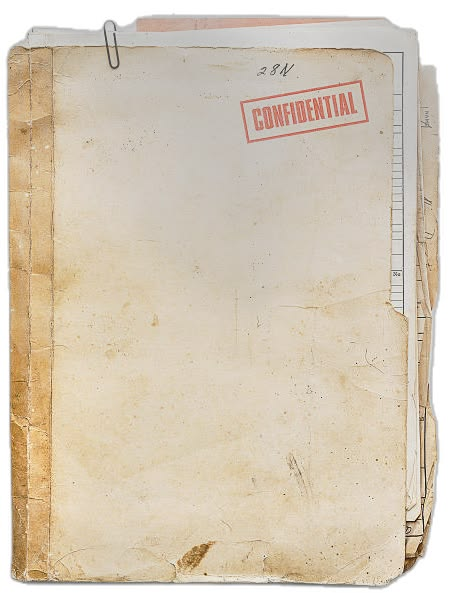
O Arquivo Perdido
Dentro do arquivo existe uma mensagem: "Se você encontrou isso, significa que ele acordou novamente." Há uma localização marcada. Uma floresta próxima da cidade.
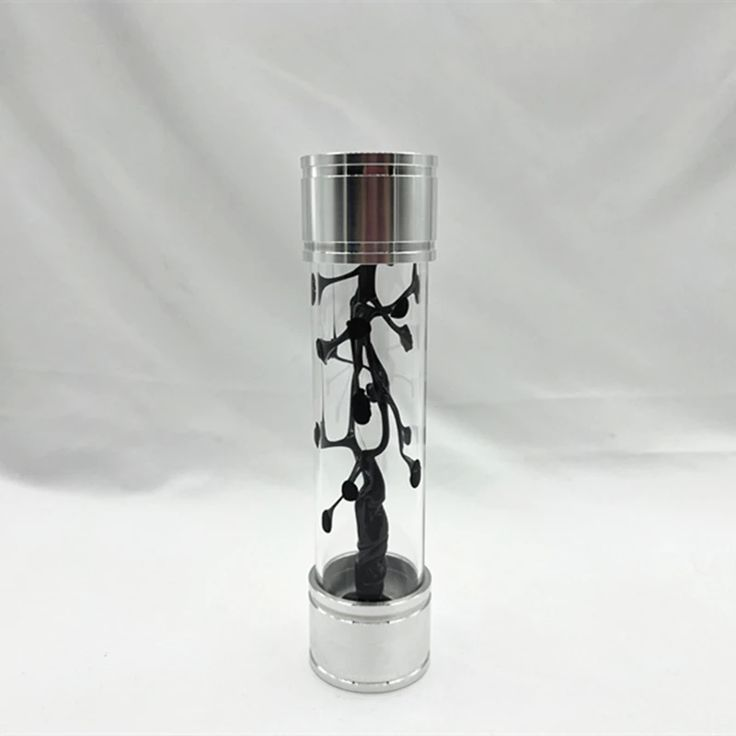
O Fragmento Vivo
O símbolo começa a se mover. Você percebe que não é tinta. É uma pequena parte de alguma coisa. Um fragmento orgânico.
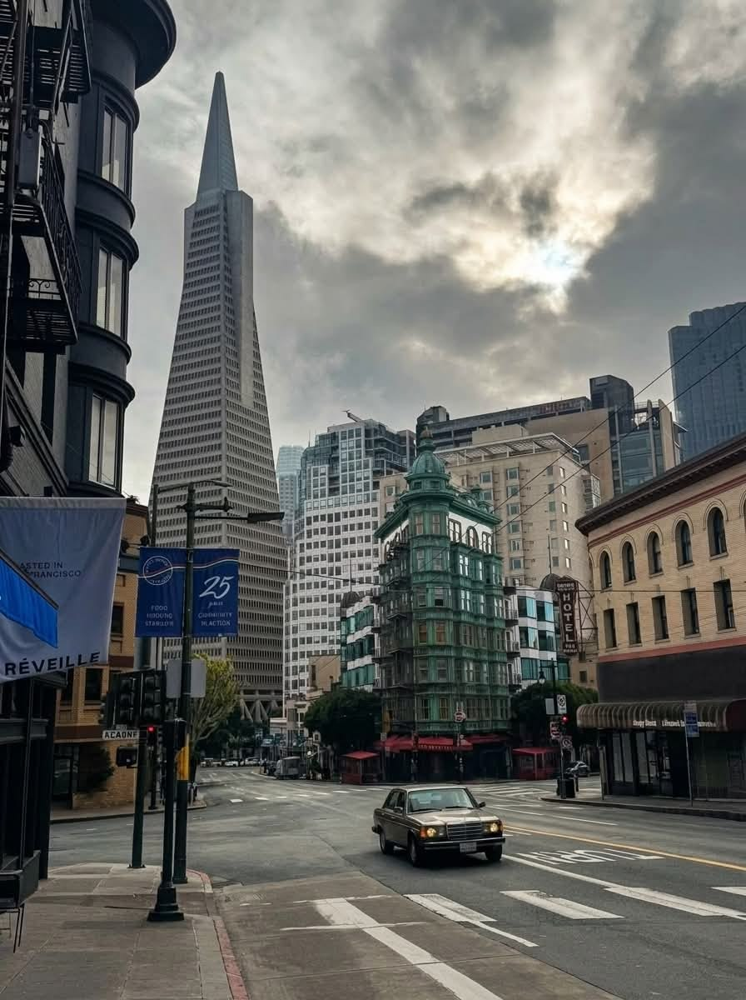
A Voz no Escuro
Você decide ir embora. Mas naquela noite, quando tudo está silencioso... uma voz aparece. "Nós esperamos."
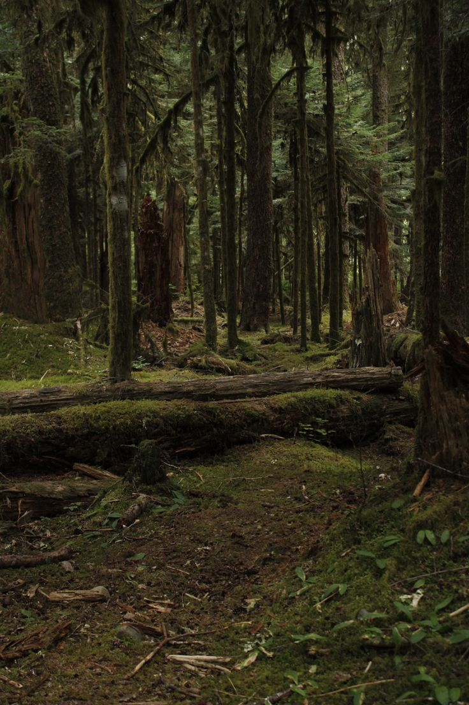
A Floresta Sem Nome
Seguindo as coordenadas, você chega em uma floresta que não aparece em nenhum mapa. As árvores parecem antigas demais. No chão existem marcas estranhas, como se algo pesado tivesse passado por ali. Entre as folhas existe uma entrada escondida.
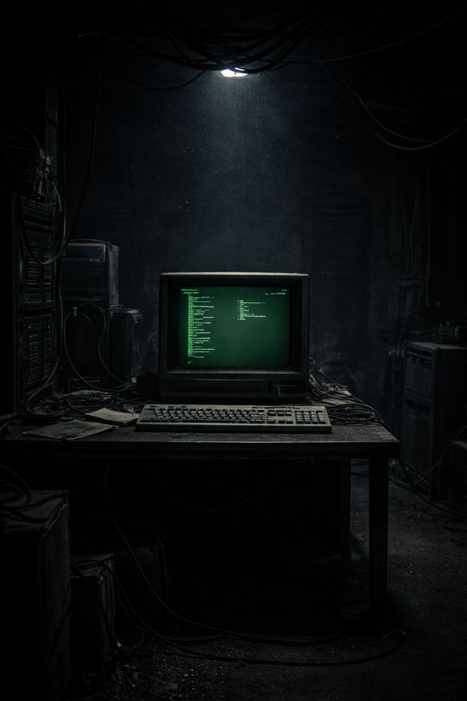
O Computador Abandonado
O computador ainda funciona. Na tela aparece: "PROJETO SIMBIOSE - ACESSO NEGADO" Você encontra três arquivos: ARQUIVO 001 ARQUIVO 002 ARQUIVO FINAL
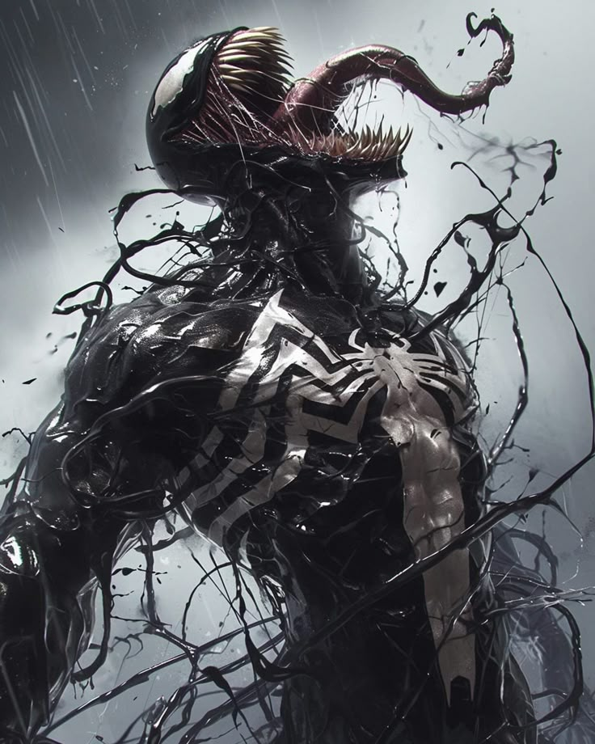
O Primeiro Contato
Assim que toca o fragmento, ele reage. Uma substância negra começa a se mover pelo chão. Uma voz surge na sua mente: "Você nos encontrou..." "Finalmente."
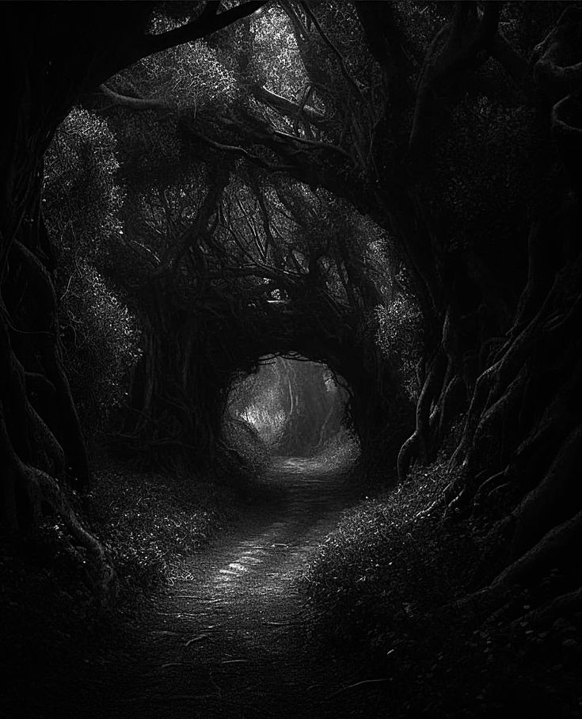
O Túnel Subterrâneo
O túnel parece ter sido construído para esconder algo. Nas paredes existem símbolos iguais aos do livro. Quanto mais você anda, mais escuta uma respiração. Mas não existe ninguém ali.
A Criatura da Floresta
Você encontra uma criatura desconhecida. Ela não parece querer atacar. Ela observa você. Como se estivesse esperando uma escolha.
A Cidade Abandonada
Você volta para a cidade. Mas percebe que tudo parece diferente. Os postes piscam. As telas mostram uma mensagem: "ELE ESTÁ MAIS PERTO."
Arquivo 001 - Projeto Simbiose
O arquivo revela uma gravação antiga. "Dia 42. O organismo encontrado fora da Terra não é uma ameaça. Ele aprende. Ele sente. Ele escolhe." No final da mensagem existe um aviso: "Nunca deixe ele encontrar alguém compatível."
Sistema Bloqueado
O computador pede uma senha. Na tela aparece uma dica: "Aquilo que vive nas sombras sempre retorna." Talvez exista uma palavra escondida.
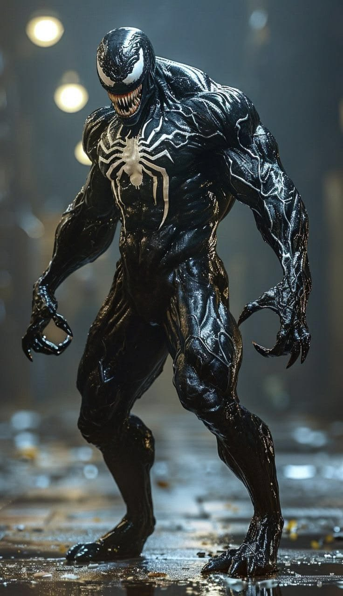
A Escolha do Simbionte
A criatura se aproxima. Você sente medo. Mas também sente que ela está sozinha. A voz retorna: "Não queremos destruir você." "Queremos completar você." O simbionte toca sua mão.
Erro no Sistema
Você tenta destruir o fragmento. Mas ele reage. As luzes começam a piscar. O computador mostra: "COMPATIBILIDADE DETECTADA." "USUÁRIO IDENTIFICADO."
A Fuga
Você corre pelo túnel. Mas algo corre junto. Uma sombra acompanha seus passos. Quando olha para trás... não existe ninguém. Apenas uma marca negra na parede.
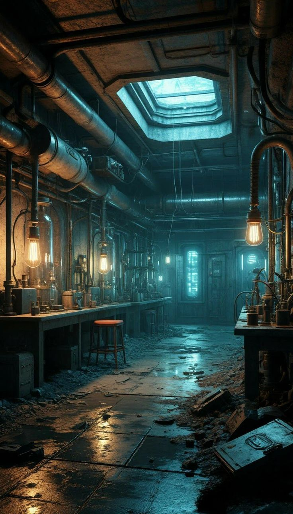
Laboratório Subterrâneo
Finalmente você encontra o laboratório. Tanques quebrados estão espalhados. Papéis mostram experimentos. No centro existe um tanque ainda funcionando. Dentro dele... algo se move.
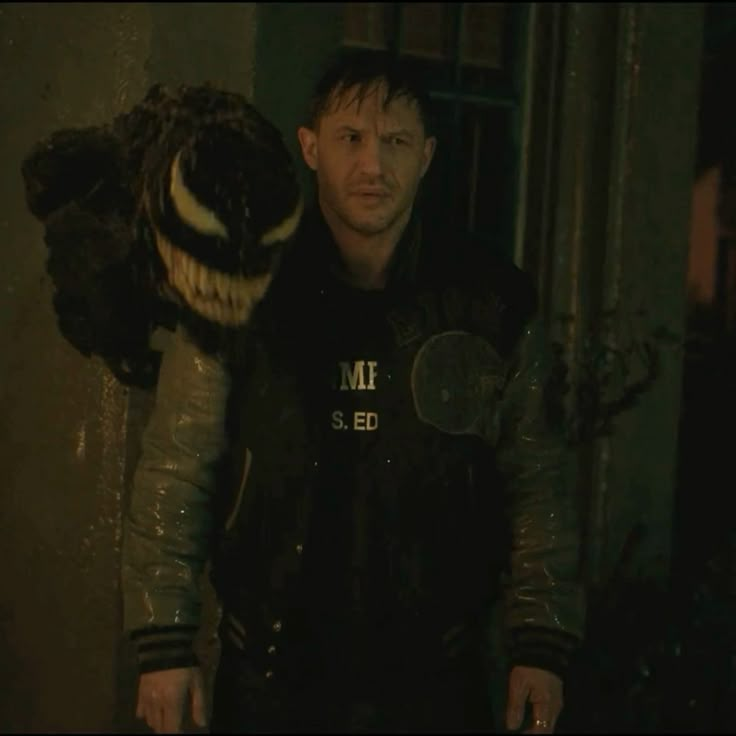
A Sala Escondida
Atrás da porta existe uma sala secreta. Nas paredes existem fotos. Todas mostram a mesma criatura. Mas em uma delas... ela está ao lado de uma pessoa.
O Sinal Desconhecido
O sinal leva você até uma área abandonada da cidade. Todas as telas começam a ligar ao mesmo tempo. Uma mensagem aparece: "NÃO É ELE QUE ESTÁ PROCURANDO VOCÊ." "É VOCÊ QUE ESTÁ PROCURANDO ELE."
Arquivo Proibido
O arquivo estava escondido por um motivo. Ele revela a verdadeira origem. O simbionte não chegou para invadir. Ele fugiu. Estava sendo usado como experimento. A criatura só queria encontrar alguém que pudesse confiar.
A Senha Correta
Você digita: VENOM A tela fica preta. Por alguns segundos nada acontece. Então aparece: "COMPATIBILIDADE: 100%" "USUÁRIO ACEITO."
A União
O simbionte envolve seu corpo. Você sente medo. Depois sente força. Memórias que não são suas começam a aparecer. Uma voz surge: "Agora somos dois." "Mas também somos um."
O Tanque Secreto
Você abre o tanque. A substância negra desperta. Ela se move rapidamente. Não como uma máquina. Como um ser vivo. Ela reconhece você.
Computador Principal
O sistema possui milhares de arquivos. Um deles chama atenção: "SUJEITO FINAL" Ao abrir, aparece uma gravação.
A Foto Perdida
Na foto existe uma pessoa junto ao simbionte. Atrás está escrito: "Primeiro hospedeiro compatível." Você percebe que o experimento já aconteceu antes.
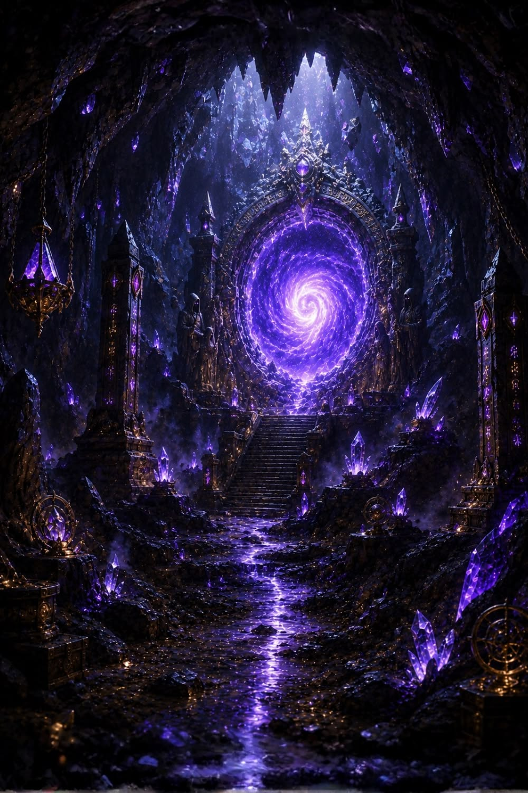
A Origem
O sinal vem de uma estrutura escondida. Um portal. Ele parece uma mistura de tecnologia com algo vivo. O laboratório não criou o simbionte. Apenas encontrou uma passagem.
O Último Registro
A gravação revela a verdade. O simbionte não era uma arma. Era uma forma de vida. Os cientistas tentaram controlar algo que não entendiam. A última frase do pesquisador diz: "Ele não precisa de um dono." "Ele precisa de alguém que escolha ficar."
Novos Poderes
Agora você consegue sentir o ambiente. Escutar pensamentos. Mover o simbionte pelo corpo. Mas existe um problema... Ele também sente suas emoções.
Dois em Um
Você tenta conversar com ele. Ao invés de lutar, vocês chegam a um acordo. Pela primeira vez, o simbionte confia em alguém.
O Erro Final
Você fecha o tanque. Mas o sistema entra em emergência. Uma mensagem aparece: "VOCÊ ERA A ÚLTIMA CHANCE." As luzes se apagam.
Todos os Arquivos
Milhares de informações aparecem. Experimentos. Tentativas. Falhas. Até que um arquivo chama atenção: "PROJETO HOSPEDEIRO PERFEITO."
O Portal
A estrutura começa a funcionar. Do outro lado existe um lugar desconhecido. A origem do simbionte. Antes de atravessar, você ouve uma última pergunta: "Você quer descobrir de onde viemos?"
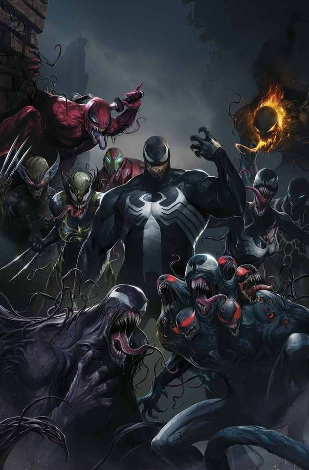
Final: O Guardião
Você e o simbionte aprendem a existir juntos. Não existe controle. Não existe medo. Apenas uma parceria. O mundo nunca saberá seu segredo. Mas quando precisar... vocês estarão lá.
🖤 FIM - A UNIÃO PERFEITA
Final: Consumido
O poder era grande demais. O simbionte assumiu completamente. Você ainda está lá... Mas agora apenas observa. Uma nova criatura nasceu.
⚫ FIM - O SIMBIONTE VENCEU
Final: O Sobrevivente
Você deixa tudo para trás. Mas sabe que aquilo ainda existe. Em algum lugar. Esperando outro encontro.
🌑 FIM - A SOMBRA CONTINUA
A Origem Verdadeira
Do outro lado do portal, você descobre algo impossível. Existem outros simbiontes. Outras histórias. Outros mundos. Mas apenas um escolheu você.
O Segredo Perdido
Você fecha o portal. Ninguém jamais saberá o que estava ali. Mas antes de ir embora, ouve uma última frase: "Nós ainda estamos aqui."
🌀 FIM - O MISTÉRIO CONTINUA
FINAL SECRETO
Você descobriu toda a verdade. Você não encontrou um monstro. Encontrou alguém perdido. O simbionte finalmente encontrou um lar. A tela fica preta...